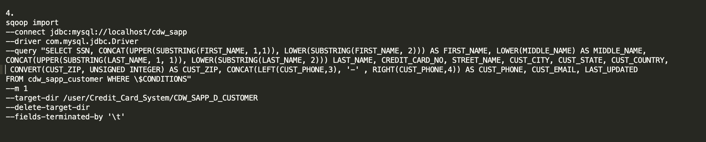

Apache Sqoop is a tool designed for efficiently transferring bulk data between Apache Hadoop and structured datastores such as relational databases.
Sqoop (SQL-to-Hadoop) is a big data tool that offers the capability to extract data from non-Hadoop data stores, transform the data into a form usable by Hadoop, and then load the data into HDFS. Sqoop uses MapReduce framework to import and export the data, which provides parallel mechanism as well as fault tolerance.
Sqoop makes developers life easy by providing command line interface. This process is called ETL, for Extract, Transform, and Load.
Sqoop is used as a third step in our case study to successfully transfer data from our Database into Hadoop. Sqoop will also be used again as a sixth step but this time extract only new or modified data from our database.
As previously stated we use Sqoop to Extract, Transform and Load data based on requirements. Following are the 4 initial Sqoop-Boundary Queries and a breakdown on what is being done.
1. The first command in this query indicates the connector jdbc:mysql and a command to transfer our database //localhost/cdw_sapp. Sqoop connectors allow Sqoop to overcome the differences in SQL dialects supported by various databases along with providing optimized data transfer. A connector is a pluggable piece that is used to fetch metadata about transferred data (columns, associated data types, …) and to drive the data transfer itself in the most efficient manner. The most basic connector that is shipped with Sqoop is called Generic JDBC Connector and, as the name suggests, it’s using only the JDBC interface for accessing metadata and transferring data.
--connect jdbc:mysql://localhost/cdw_sapp
2. Second command we connect the driver, The word driver in Sqoop refers to a JDBC Driver.
--driver com.mysql.jdbc.Driver
3. Third command is the actual query with its location.
--query "SELECT BRANCH_CODE, BRANCH_NAME, BRANCH_STREET, BRANCH_CITY, BRANCH_STATE, IF(BRANCH_ZIP = NULL, 999999, BRANCH_ZIP) AS BRANCH_ZIP, CONCAT('(', SUBSTRING(BRANCH_PHONE, 1, 3), ')', SUBSTRING(BRANCH_PHONE, 4, 3), '-', SUBSTRING(BRANCH_PHONE, 7, 4)) AS PHONE_NUMBER, LAST_UPDATED
FROM cdw_sapp_branch WHERE \$CONDITIONS"
--query "SELECT TRANSACTION_ID, CREDIT_CARD_NO, CUST_SSN, DATE_FORMAT(CONCAT(year, '-', month, '-', day), GET_FORMAT(DATE, 'INTERNAL')) AS TIMEID, BRANCH_CODE, TRANSACTION_TYPE, TRANSACTION_VALUE, LAST_UPDATED
FROM cdw_sapp_creditcard WHERE \$CONDITIONS"
--query "SELECT DATE_FORMAT(CONCAT(year, '-', month, '-', day), GET_FORMAT(DATE, 'INTERNAL')) AS TIME_KEY, MONTH, DAY, YEAR, QUARTER(concat(year, '-', month, '-', day)), LAST_UPDATED
FROM cdw_sapp_creditcard WHERE \$CONDITIONS" and
--query "SELECT SSN, CONCAT(UPPER(SUBSTRING(FIRST_NAME, 1,1)), LOWER(SUBSTRING(FIRST_NAME, 2))) AS FIRST_NAME, LOWER(MIDDLE_NAME) AS MIDDLE_NAME,
CONCAT(UPPER(SUBSTRING(LAST_NAME, 1, 1)), LOWER(SUBSTRING(LAST_NAME, 2))) LAST_NAME, CREDIT_CARD_NO, STREET_NAME, CUST_CITY, CUST_STATE, CUST_COUNTRY, CONVERT(CUST_ZIP, UNSIGNED INTEGER) AS CUST_ZIP, CONCAT(LEFT(CUST_PHONE,3), '-' , RIGHT(CUST_PHONE,4)) AS CUST_PHONE, CUST_EMAIL, LAST_UPDATED
FROM cdw_sapp_customer WHERE \$CONDITIONS"
4. Fourth command is representing the mappers, by specifying -m 1 means only one mapper will be run to import the table.
-m1
5. Fifth command is indicating a full directory path and the data files that will be created directly inside the specified folder.
--target-dir /user/Credit_Card_System/CDW_SAPP_D_BRANCH,
--target-dir /user/Credit_Card_System/CDW_SAPP_F_CREDITCARD,
--target-dir /user/Credit_Card_System/CDW_SAPP_D_TIME and
--target-dir /user/Credit_Card_System/CDW_SAPP_D_CUSTOMER
6. Sixth command is a directive that will delete any existing data in target directory before starting the sqoop import process.
--delete-target-dir
7. Seventh command is --fields-terminated-by is the option used during Sqoop Import which describe how the data will be written to HDFS. Format here is '\t'
--fields-terminated-by '\t'

A Sqoop job creates and saves the import and export commands. It specifies parameters to identify and recall the saved job. This re-calling or re-executing is used in the incremental import, which can import the updated rows from RDBMS table to HDFS.
The next set of slides gives a details description of the Sqoop Jobs created for re-execution. The commands associated with these jobs are broken down below.
1. Sqoop metastore is used to store Sqoop job information in a central place. The sqoop metastore helps collaboration between Sqoop users and developers; for example, user A can create a job to load some specific data, then any other user can access from any node in the cluster the same job and just run it again.
--meta-connect jdbc:hsqldb:hsql://localhost:16000/sqoop
2. Next we Define a new saved job with the specified job-id, in this case it is cdw_sapp_branch, cdw_sapp_creditcard, cdw_sapp_time and cdw_sapp_customer.
--create cdw_sapp_branch,
--create cdw_sapp_creditcard,
--create cdw_sapp_time and
--create cdw_sapp_customer
3. The next command is for Sqoop import, a tool which we use for importing tables from RDBMS to HDFS is Sqoop.
-- import
4. Again we connect the driver which is referring to the JDBS driver.
--connect jdbc:mysql://localhost/cdw_sapp
5. Command line 5 is also referring to the JDBS driver.
--driver com.mysql.jdbc.Driver
6. The sixth command is the actual query.
--query "SELECT BRANCH_CODE, BRANCH_NAME, BRANCH_STREET, BRANCH_CITY, BRANCH_STATE, IF(BRANCH_ZIP = NULL, 999999, BRANCH_ZIP) AS BRANCH_ZIP, CONCAT('(', SUBSTRING(BRANCH_PHONE, 1, 3), ')', SUBSTRING(BRANCH_PHONE, 4, 3), '-', SUBSTRING(BRANCH_PHONE, 7, 4)) AS PHONE_NUMBER, LAST_UPDATED
FROM cdw_sapp_branch WHERE \$CONDITIONS",
--query "SELECT TRANSACTION_ID, CREDIT_CARD_NO, CUST_SSN, DATE_FORMAT(CONCAT(year, '-', month, '-', day), GET_FORMAT(DATE, 'INTERNAL')) AS TIMEID, BRANCH_CODE, TRANSACTION_TYPE, TRANSACTION_VALUE, LAST_UPDATED
FROM cdw_sapp_creditcard WHERE \$CONDITIONS",
--query "SELECT DATE_FORMAT(CONCAT(year, '-', month, '-', day), GET_FORMAT(DATE, 'INTERNAL')) AS TIME_KEY, MONTH, DAY, YEAR, QUARTER(concat(year, '-', month, '-', day)), LAST_UPDATED
FROM cdw_sapp_creditcard WHERE \$CONDITIONS" and
--query "SELECT SSN, CONCAT(UPPER(SUBSTRING(FIRST_NAME, 1,1)), LOWER(SUBSTRING(FIRST_NAME, 2))) AS FIRST_NAME, LOWER(MIDDLE_NAME) AS MIDDLE_NAME,
CONCAT(UPPER(SUBSTRING(LAST_NAME, 1, 1)), LOWER(SUBSTRING(LAST_NAME, 2))) LAST_NAME, CREDIT_CARD_NO, STREET_NAME, CUST_CITY, CUST_STATE, CUST_COUNTRY, CONVERT(CUST_ZIP, UNSIGNED INTEGER) AS CUST_ZIP, CONCAT(LEFT(CUST_PHONE,3), '-' , RIGHT(CUST_PHONE,4)) AS CUST_PHONE, CUST_EMAIL, LAST_UPDATED
FROM cdw_sapp_customer WHERE \$CONDITIONS"
7. Seventh command is representing the mappers, by specifying -m 1 means only one mapper will be run to import the table.
-m1
8. At command eigth we indicating a full directory path and the data files that will be created directly inside the specified folder.
--target-dir /user/Credit_Card_System/CDW_SAPP_D_BRANCH,
--target-dir /user/Credit_Card_System/CDW_SAPP_F_CREDITCARD,
--target-dir /user/Credit_Card_System/CDW_SAPP_D_TIME and
--target-dir /user/Credit_Card_System/CDW_SAPP_D_CUSTOMER
9. In the ninth command I have specified 2 versions of Sqoop append, 1. Incremental append and incremental lastmodified. Append should be used when importing a table where new rows are continually being added with increasing row id values. The second version of lastmodified should use this when rows of the source table may be updated, and each such update will set the value of a last-modified column to the current timestamp.
--incremental append
--append
--incremental lastmodified
9. In the ninth command I have specified 2 versions of Sqoop append, 1. Incremental append and incremental lastmodified. Append should be used when importing a table where new rows are continually being added with increasing row id values. The second version of lastmodified should use this when rows of the source table may be updated, and each such update will set the value of a last-modified column to the current timestamp.
--incremental append
--append
--incremental lastmodified
10. Will check data newer than some previously-imported set of rows.
--check-column LAST_UPDATED
11. Will check last value at "0" where all (b) jobs will check at a given date or parameter.
--last-value '0' and
--last-value '1990-01-01'
12. All (b) jobs will save data into a directory path and those files will be created directly inside the specified folder.
--target-dir /user/Credit_Card_System/CDW_SAPP_D_BRANCH,
--target-dir /user/Credit_Card_System/CDW_SAPP_F_CREDITCARD,
--target-dir /user/Credit_Card_System/CDW_SAPP_D_TIME and
--target-dir /user/Credit_Card_System/CDW_SAPP_D_CUSTOMER
13. The final command is --fields-terminated-by the option used during Sqoop Import which describe how the data will be written to HDFS. Format here is '\t'
--fields-terminated-by '\t'